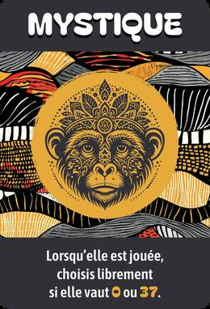
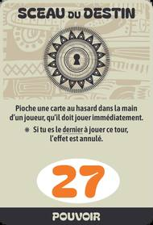
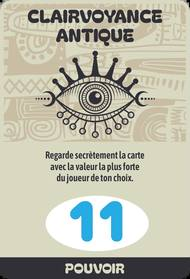
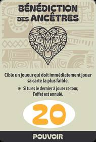
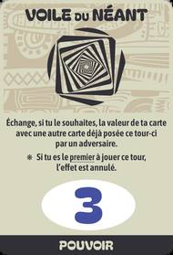

Règle officielle
Chacun annonce combien de plis il va faire, puis doit le réaliser, ni plus ni moins. Bluff, cartes Pouvoir et manche Mystique : le joueur qui garde le plus de vies devient Maître des Mystiques.
À chaque manche, prédire le nombre exact de plis qu'on va gagner, puis jouer ses cartes (nombres ou pouvoirs). Prédiction juste : on garde ses vies. Sinon, on en perd.
Mélangez les cartes Nombre avec les cartes spéciales, selon le nombre de joueurs :
Chaque joueur reçoit 5 cartes Vie, empilées devant lui : 5 étoiles au-dessus, puis 4, 3, 2 et 1 étoile en bas. Elles restent toujours visibles par tous.
Le donneur change à chaque manche, dans le sens des aiguilles d'une montre.
Cartes distribuées par manche. Puis un nouveau cycle repart à 7, jusqu'à ce qu'un joueur n'ait plus de vie.
En commençant à gauche du donneur, chacun annonce à voix haute le nombre exact de plis qu'il va remporter.
Chacun compare son pari aux plis réellement remportés.

Maître des Mystiques
Une carte Pouvoir gagne toujours l'égalité avec une carte Nombre de même valeur.
Carte suprême. Hors manche Mystique, on choisit 0 ou 37 en la posant : à 37, elle garantit le pli.

Piochez au hasard une carte dans la main d'un joueur : il doit la jouer tout de suite.
Annulé si vous jouez en dernier.

Regardez en secret la carte la plus forte du joueur de votre choix.

Un joueur ciblé doit abattre tout de suite sa carte la plus faible.
Annulé si vous jouez en dernier.

Échangez la valeur de votre carte avec une carte déjà posée par un adversaire.
Annulé si vous jouez en premier.